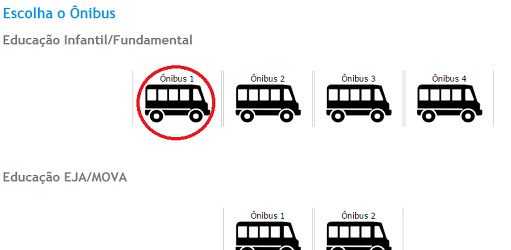
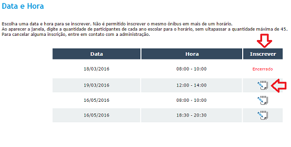
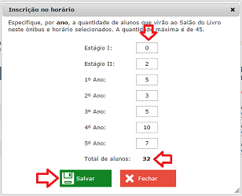
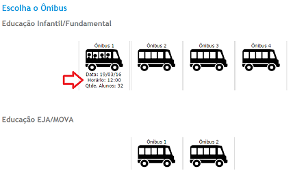
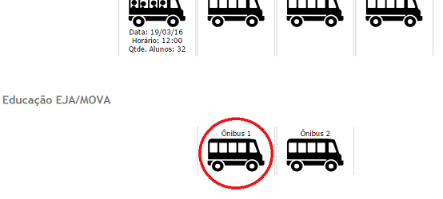
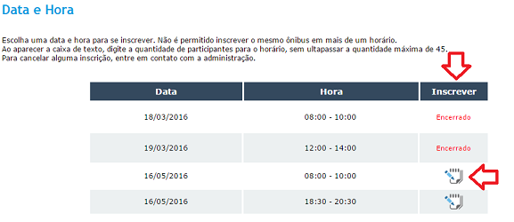
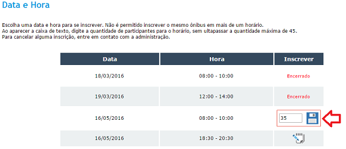
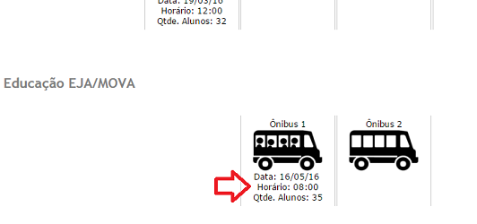
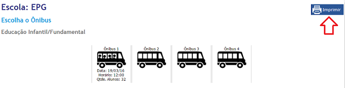
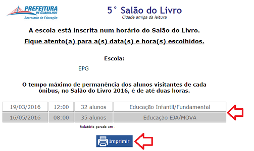

Tutoriais
Para inscrever os educandos de Educação Infantil/Fundamental, selecione o ônibus desejado do tipo "Educação Infantil/Fundamental".

Na página que abre, selecione o DIA e o HORÁRIO desejados para se realizar a inscrição dos educandos clicando no ícone na coluna "INSCRIÇÃO".
Ao selecionar o ícone, aparecerá uma nova janela onde é necessário discriminar através do ano escolar a quantidade de educandos que serão inscritos naquele DIA e HORÁRIO selecionados.
A quantidade total de alunos é exibida conforme é alterado a quantidade de educandos por ano escolar. Respeite a capacidade física de cada ônibus, que é de 45 passageiros.
Ao encerrar, clique em "SALVAR".
 
Ao concluir a inscrição, observe que o ícone do ônibus na página inicial agora apresenta as informações referentes ao DIA e HORÁRIO selecionados, além da quantidade total de educandos inscritos naquele ônibus.
É possível alterar a quantidade de inscritos a qualquer momento, desde que a nova quantidade total seja maior ou igual ao anterior, ou seja, não poderá haver redução no número total de inscritos.
Para cancelar uma inscrição, é necessário entrar em contato com a comissão responsável pela organização do Salão do Livro.

Para inscrever os educandos de Educação EJA/MOVA, selecione o ônibus desejado do tipo "Educação EJA/MOVA".

Na página que abre, selecione o DIA e o HORÁRIO desejados para se realizar a inscrição dos educandos clicando no ícone na coluna "INSCRIÇÃO".
Ao selecionar o ícone, aparecerá um campo onde é possível inserir a quantidade total de educandos que serão inscritos no DIA e HORÁRIO selecionados para aquele ônibus.
Respeite a capacidade física de cada ônibus, que é de 45 passageiros. Ao encerrar, clique no ícone de disquete para salvar.
 
Ao concluir a inscrição, observe que o ícone do ônibus na página inicial agora apresenta as informações referentes ao DIA e HORÁRIO selecionados, além da quantidade total de educandos inscritos naquele ônibus.
É possível alterar a quantidade de inscritos a qualquer momento, desde que a nova quantidade total seja maior ou igual ao anterior, ou seja, não poderá haver redução no número total de inscritos.
Para cancelar uma inscrição, é necessário entrar em contato com a comissão responsável pela organização do Salão do Livro.

Para imprimir o comprovante de inscrição, clique no botão "IMPRIMIR" localizado à direita no topo da página de início ou de inscrição dos educandos.

Ao clicar em "IMPRIMIR", será aberto uma nova página com o comprovante de inscrição. Verifique as informações dos dias e horários de cada ônibus e clique novamente em "IMPRIMIR" para imprimi-lo.
